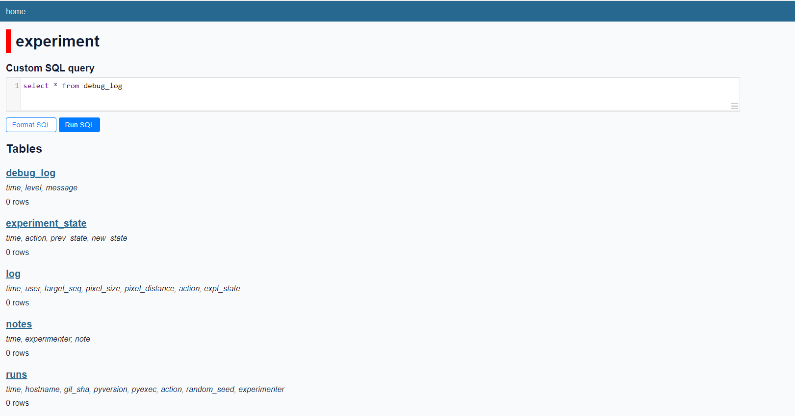

**Logging experimental data: Part II: Logging to sqlite**
John H. Williamson
[Back to the series on logging](index.md.html)
# Databases and logging to sqlite
My view is that experimental logging should be **recorded to a database** as it is being logged. Databases provide guaranteed clean transactions, make it easy to manage multiple related tables, and are extremely fast to query when performing analyses. The convenience of plain text manipulations like `tail logs.csv` is easily replicated with modern tools. Multiple tables make it easy to cleanly record and separate information that is spread over different timescales (e.g. captured variables that vary once per trial like `user_id` or `room_size` versus ones that vary once per second like `x,y,z`).
This post discusses:
* the reasons to choose sqlite
* some frequently asked questions about using a database for logging
* a prototype table structure for logging
* some examples of basic queries on database logs
* and some brief guidance on using `datasette` and `sqlite-utils` to manipulate and browse log files.
## Database choice
In most cases, I'd use `sqlite` as the database. It's fast, lightweight, available for pretty much everywhere, and there is excellent tooling to explore and manipulate databases. The only case where a heavier duty database like `postgres` might be justifiable would be in concurrent trials (e.g. many simultaneous users in crowdsourced trial), as `sqlite` is designed for single process writers.
I've encountered some logging projects using NoSQL like MongoDB. These are sometimes easier to setup (less schema design etc.) but can be a poor fit to the problem of logging. In particular, a schema is good way of designing a usable and well-thought out log. DuckDB is highly spoken of, but I've no experience of it as a logging backend.
## sqlite
With `sqlite` you have:
* a single log file to deal with;
* trivial scaling to many gigabytes of experimental data;
* relatively compact storage;
* reliable transactions, full SQL queries, indices, multiple tables;
* automatic constraints and integrity guarantees (e.g. unique usernames, ages in range 18-100) if you want to use them;
* quick and easy ways of previewing data;
* support for [spatial queries](https://www.sqlite.org/rtree.html), [text search](https://www.sqlite.org/fts5.html) and [JSON](https://www.sqlite.org/json1.html)
`sqlite` is:
* extremely efficient;
* a standard, free and well-documented format that many tools can open and work with;
* already available in virtually all language and OS combinations ([C, C++](https://www.sqlite.org/index.html), [Python](https://docs.python.org/3/library/sqlite3.html) -- built in, [JavaScript](https://github.com/sql-js/sql.js), [Java](https://www.sqlitetutorial.net/sqlite-java/), [R](https://solutions.rstudio.com/db/databases/sqlite/), [MATLAB](https://www.mathworks.com/help/database/ug/sqlite.html)).
* [You don't even need to have an operating system to use sqlite](https://www.sqlite.org/vfs.html).
### sqlite-utils and datasette
In the following discussion I'm going to assume of the use of two excellent utilities by Simon Willison:
* [`sqlite-utils`](https://github.com/simonw/sqlite-utils), which provides easy importing/exporting to CSV, schema modifications and database information from the command line;
* [`datasette`](https://datasette.io/), an outstanding utility that instantly pops up a webserver serving the contents of a sqlite database as a web page, where you can browse and query data instantly. You can even run this in *entirely in browser* with [datasette-lite](https://lite.datasette.io/) which makes sharing and disseminating datasets easy. **I can't recommend datasette highly enough.**
But even with plain old `sqlite3` installed, you can run simple SQL scripts to check data, export CSV, and print statistics.
## sqlite logs
### FAQ
* Won't I have to choose a schema then? And then manually create tables and all that jazz?
* Yes. Creating a schema for the data is key step in designing a log format; **you can't skip it!**
* Most logging schemas are very simple and follow a basic pattern; there are examples below.
* *If you can't write down a schema, you aren't ready to start logging data.*
* Creating the initial empty tables should be part of the experimental software.
* In the worst case, just writing rows to `sqlite` table(s) with a timestamp and a JSON blob is usually better than dumping to a file.
* [Isn't a plain text format best](https://plain-text.co/)?
* In many ways, it is. But text formats are most useful for analysis or archival, not as the primary record. Generate plain text *from* a database. This is a scalable and robust way to deal with logs.
* Tools like `datasette` make sqlite databases so easy to explore that it mitigates many of the reasons to stick to a plain text format.
* But what if I need to record things that aren't just dates, numbers or strings?
* Ideally, you'd avoid doing this. The more carefully the schema is planned, and the simpler it is, the less pain there will be when analysing.
* Sometimes this isn't possible; maybe you need to store a tree of options, or a numpy array, or a collection of configuration switches.
* In that case, just store a JSON string in the database. `sqlite` [can even parse the JSON and query it later](https://www.sqlite.org/json1.html), if you wish.
* Do think carefully before blindly dumping JSON: Do I need this? Will I be able to use this later?
* Do I really need foreign keys, constraints, views, joins, triggers?
* No. You almost certainly don't. Most database logs are plain tables. A logger doesn't need anything fancy.
* Constraints (like `UNIQUE`, `NOT NULL` or `CHECK(width>0)`) are sometimes useful to ensure integrity.
* It can be handy to create views *after* an experiment is complete to make it easier to explore the data.
* I need to store lots of large binary files in my experiments, like images.
* You *can* store these as BLOBs inside a `sqlite` database.
* But this can lead to excessively large database files and degraded performance.
* Instead, a better option is to write them as separate files, but index the filenames in the database (with the rows they correspond to, so they have timestamps and so on).
* My funder/colleague/archival service requires a CSV file!
* No problem. Just generate CSV files (or whatever it is you need) *programatically* from the log database. This is easy with `sqlite-utils`.
* By writing a script to generate the transformed files, you can reliably reproduce all of the data from the database.
* It's fine to do the analysis on the CSV files, or a subset of them, if that's what works best -- but it's not great as a format for the master data.
* Should I create indices (`CREATE INDEX ...`) on the database?
* I would not create indices *during* logging -- it's unneccessary and can slow things down.
* Instead, create them *after* the experiment is complete on variables that you know you will be querying frequently (like `user_id` etc.).
* How will I analyse a `sqlite` file?
* You can perform exploratory queries with tools like `datasette` or the `sqlite3` command line tool.
* This is useful for checking things like average task times, or completion rates per group, etc.
* If you use Python, you can *directly* open a `sqlite` file in `Pandas` with `read_sql_query` and get a DataFrame back from a query (e.g. `read_sql_query('SELECT * FROM LOG')`)
* Other analysis tools like R offer similar capabilities.
* Alternatively, use `sqlite-utils` to export tables (or queries) to CSV and work with those.
* The key thing is that any generated CSV files be created *programmatically* from the master database -- write scripts that generate the "second stage" analysis data from the raw logs.
* How do I deal with version control of the logs?
* A binary database is not well suited to version control (at least not `git`), but version control is potentially useful when dealing with log files, at the very least as a reliable and easily distributed form of backup.
* A simple workaround is to `.gitignore` the binary database, and dump the sqlite file to a plain text file and version control *that*, leaving the real sqlite file out of the VCS.
```
sqlite3 my_logs.db .dump > my_logs.sql
git add my_logs.sql
git commit -m "Updated database after experimental run for user KINED-ABABO"
```
* If ever required, the `.sql` file can be reconstituted into a replica of the binary database:
```
sqlite3 my_logs.db < my_logs.sql
```
* What if I need to change the log format/schema partway through?
* You shouldn't! Pilots should have been conducted to verify the log format is good.
* But we all know this happens sometimes.
* Procedure:
1. Track the version number of your log formats carefully (`log-format-v1`, `log-format-v2`, etc.) (and write it in a README file!)
1. Check the existing log database into version control and/or backup the logs.
1. Modify the logging software to log in the new format.
1. Write a script that uses `sqlite-utils` or `python` to modify the schema, like `log-format-v1-to-v2-db.sh` (see the example below).
1. Check both the new version of the logging software and the conversion script into version control.
1. Run the script and convert the database to `log-format-v2`.
1. Check the new `log-format-v2` database into version control (or backup).
1. Continue logging.
* Example:
```
[log-format-v1-to-v2.sh]
# modifies the "log" table
# adds target_origin and target_final; removes target; renames name to username
sqlite-utils add-column my_logs.db log target_origin text
sqlite-utils add-column my_logs.db log target_final text
sqlite-utils transform my_logs.db log --drop target
sqlite-utils transform my_logs.db log --rename name username
---
# dump the current data and commit it
sqlite-utils dump my_logs.db > mylogs.sql
git add log-format-v1-to-v2-db.sh
git add my_logs.sql
git commit -m "Log format version v1 -> v2"
# <--- modify logger.py to use the new format
git add logger.py
# perform the conversion
./log-format-v1-to-v2.sh
# dump the new version and commit it
sqlite-utils dump my_logs.db > mylogs.sql
git add my_logs.sql
git commit -m "Log format now in version 2"
# carry on...
```
# Prototypes for log table structure
## What does a typical log database look like?
Every experiment will have its own needs. But there are several common table structures I've used:
> In these examples I've replaced timestamps with `x` to make the tables readable.
> In practice they'd be ISO8601 timestamps, as described in Part I.
## The very simplest log
The simplest experiments might just have a single `log` table, and maybe a `notes` table to record additional information. More complicated experiments need a bit more structure. For example, there might be a table `log` like:
```
Timestamp User State Action Duration Success
-----------------------------------------------------
x QRF s1 acquire 5.4 F
x QRF s2 acquire 10.2 T
```
or even just a table of timestamp JSON rows:
```
Timestamp JSON
-------------------------------------------
x {"user":"s1", ...}
```
but this loses much of the power of a SQL database. Still, with JSON support in sqlite, you can execute queries like:
```sql
SELECT
json_extract(json, "$.user") as user
json_extract(json, "$.task") as task FROM log WHERE user='s1'
GROUP BY task ORDER BY timestamp LIMIT 10;
```
to get the 10 first rows for user `s1` separated by task. This type of JSON query will be slow for big tables, however.
## Prototype tables
More complex experiments benefit from more structure. Much of this is fairly unchanged from one experiment to the next. The basic tables are usually `users, trials, states, log, notes`.
### users
Most experimental trials that I work with involve users. Users are generally "enrolled" in a trial and then are assigned to undertake some or all of the experimental tasks. Typically, they have some associated metadata such as demographics or anthropometrics.
`users` gives each user a unique ID, and might record demographic or other per-user data (e.g. assignment to a treatment group, or a counterbalancing task order). It's useful to have a column to record if a user is a "test" or a from a real trial (or simulated/test/pilot/real), so
that you can safely test the final database without polluting the results.
```
Timestamp UserID AgeGroup IdGender PrefHand Group eType
----------------------------------------------------------------------
x S01 18-25 X R A sim
x T11 18-25 X R A test
x IKL 25-34 M R B pilot
x ABG 18-25 M L A real
x QRF 18-25 X R A real
x PCQ 25-35 F R B real
```
### trials
A simple table that records logical "trials" (i.e. one whole execution of an experiment, whatever that means) and the user taking them. A `user_trials` table can be created if there are multi-user trials involved.
```
Timestamp TrialID User eType Notes
--------------------------------------------------------------------------
x 0 S01 sim Simulation run 1
x 1 T11 test checking if shutdown bug fixed...
x 2 ABG pilot Pilot 1
x 3 ABG pilot Pilot 2
x 4 T21 test Testing node restart bug fix
x 5 QRF real First experiment
x 6 TPQ real Second experiment
```
### log
`log` -- the primary log of activity. This might well be split into multiple tables in a more complex experiment, but a simple experiment might be served with a single table. Note the `ExptState` column, which tracks
where we are within the experiment structure.
```
Timestamp Action User PixelSize PixelDist TargetSeq ExptState TrialID
------------------------------------------------------------------------------------
x HIT ABG 10 100 18 A/9/3/1 2
x MISS ABG 15 100 19 A/9/3/1 2
```
### experiment_state
`experiment_state` records the changes in the experimental state (for example, one task being completed). An experiment generally operates as a big state machine. Here, nested states are represented with a path-like format:
```
Timestamp PrevState NewState Action TrialID
-----------------------------------------------------------------------
x START Pre/Enrolled UserEnrolled 7
x Pre/Enrolled Pre/A/GroupAInfo ClickOK 7
x Pre/A/GroupAInfoA/1/1/1 ClickOK 7
...
x A/9/3/1 A/9/3/2 TimedOut 7
x A/9/3/2 PAUSED PausePressed 7
x PAUSED A/9/3/2 PausePressed 7
x A/9/3/2 A/9/3/3 Complete 7
x A/9/3/3 A/10/Info TimedOut 7
...
x A/20/3/3 Exit/Debrief ExptComplete 7
x Exit/Debrief Exit/Exit ClickOK 7
x Exit/Exit COMPLETE ClickOK 7
```
Special states might include "START, COMPLETE, ABORT, PAUSED".
### notes
`notes` is just free-form notes with timestamps (like a traditional lab book), useful for keeping notes on experimenter observations, technical problems, notable behaviour, etc.
```
Timestamp Experimenter Note
------------------------------------------------------------------------------
x John Sensor B was flaky for first 30 seconds.
x John Participant had to take break around 15 mins in.
x John User ABQ swapped to 'flymo' for this trial when 'zoomer' crashed.
x John Crash. Resumed from snapshot 5...
```
## Other useful tables
There are a few other tables that are often useful to have:
### runs
`runs` records the starting and stopping of the experimental software itself and the state of the "apparatus". It's useful to record in this table:
* The UUID/name/IP of the machine, if multiple machines/servers might be used (e.g. in case there is an issue with one machine detected later)
* The version of interpreter/libraries/etc. (if relevant)
* An identifier for the exact version of the experimental software running (e.g. the Git SHA).
* The experimenter ID (if there's more than one person running experiments)
* Hardware serial numbers etc. if external sensors or other equipment are used.
* Random seeds, if they are used (see above)
```
Timestamp Hostname Version GitSHA Action Seed Exper. TrialID
---------------------------------------------------------------------------------------
x jupiter 3.9.12 0890dead START 39031951 John 7
x jupiter 3.9.12 0890dead SHUTDOWN 91831202 John 7
x jupiter 3.9.12 0890dead START 89794541 Jane 8
x jupiter 3.9.12 0890dead SHUTDOWN 66635163 Jane 8
```
### saves
A useful extension is to record "resume state" (a snapshot of the complete state of the experimental software serialised -- the "save game" state) in a `saves` table, so that trials can be easily restarted in this case of a software problem, or a user issue. This is usually written as a JSON string, perhaps at intervals of two minutes or so, or after a completion of a task state. Obviously, the experimental software needs to be written carefully such that it can safely resume from such a snapshot!
```
Timestamp TrialID User ResumeState
-------------------------------------------
x 7 ABG {...
x 7 ABG {...
x 7 ABG {...
x 7 ABG {...
x 8 QRT {...
x 8 QRT {...
x 8 QRT {...
```
In this example, the user and trial are also indexed in the table, making it easy to resume a specific user if interrupted (e.g. `python experiment.py resume QRT` might restart user QRT's trial from the last place it had recorded). This table can also be useful if you need to reconstitute the software as it appeared to the user at a given moment later in the analysis phase -- if you have relatively frequent snapshots recorded in this table, you can see what exactly had happened.
It's not necessary to store this in the same file as the log database (maybe it's better practice to separate it into another sqlite DB, especially if the snapshots are large), but some form of reliable, timestamped, persistent store should be used.
### media
`media` contains references to external media, like videos, audio recordings, screenshots, big tensors, etc. that might be recorded alongside but outside of the database. In some cases this might be better merged into the main log, but in others it makes more sense as one or more separate tables.
```
Timestamp MediaFile SyncTime ExptState TrialID
---------------------------------------------------------------
x video/qrt-4-1.mp4 0.0 START 7
x imgs/qrt-1.png null A/3/9/1 7
x imgs/qrt-2.png null A/4/3/3 7
```
### debug_log
`debug_log` includes the output of the ordinary debug logs that would normally be written to `stderr` (including exception tracebacks, etc.).
```
Timestamp Level LogMsg
----------------------------------------------------------
x Debug Starting up
...
x Warning Module xxx...
```
This can come in very useful if there do turn out to be problems with the logging software.
## Ideas and examples
There are several useful ideas in these tables:
* Give users randomised, distinct and ideally pronounceable pseudonyms (like ABQ or QUROT-ABEBE), **not sequential numbers or easily confused codes**.
* Record accurate, complete timestamps everywhere. This can be invaluable in piecing together what really happened if you forgot to record something.
* Identify and record machines (and attached devices) accurately.
* Refer to logical experimental states with a *path-like notation*. For example "A/9/3/1" might mean "group A, trial 9, condition 3, repetition 1"; "A/10/Info" might mean "group A, trial 10, information page". See [the next section](part_iii_state_machines.md.html) for a more thorough discussion of path notations for states.
* Record changes of this logical state path in a separate table, and store the current state along with the primary log(s).
* Think about how you will stop and resume experiments: you should have some form of snapshot state that can be serialised and resumed from. A good test of this is to always start a new trial by writing a snapshot to the log, and immediately resuming from it.
### Example queries
Some example queries using the table structure above:
* The number of "real" (not test/pilot/simulated) users `SELECT COUNT(*) FROM USERS WHERE etype=real`
* The average task time for task A/3/2 `SELECT MEAN(TaskTime) FROM LOG WHERE ExptState="A/3/2"`
* The max task time for any of the tasks in group A `SELECT MAX(TaskTime) FROM LOG WHERE ExptState LIKE "A/"`
* The number of log entries for each user. `SELECT COUNT(*) FROM log GROUP BY user`
* The number of times each machine was started `SELECT COUNT(*) FROM runs WHERE action="START" GROUP BY hostname`
A simple validation script can be built around this type of query; then spot-checks can be a case of simply running `sqlite3 logs.db < validate.sql` to check the database is in a valid state and report the basic statistics.
# Tips and tools for working with sqlite logs
## sqlite setup
* You don't really need to configure `sqlite` beyond creating the SQL schema.
* However, it is useful to enable write-ahead logging (WAL) to improve database performance with `PRAGMA journal_mode=WAL;`
* Setting `PRAGMA synchronous=NORMAL` when using WAL will increase speed for frequent writes, at the cost of a possible small data loss if the whole system (not just your code) crashes (loses power, blue screens etc.). Generally, this is the option to use for logging.
* If you are writing log rows *very* frequently, then autocommits (the sqlite default) may cause performance issues. You can mitigate this by batching up a bunch of rows into a single transaction, with `BEGIN` and `COMMIT` before and after the transaction.
* For example, if you are continuously logging a value 100 times a second, you might want to buffer a second's worth of data and write batches of 100 in a single commit.
* If you are writing continuously 10,000 times a second, a database is probably no longer performant! You might want to stream to a binary file instead and cross-reference key timestamps in the database.
## Creating the tables
* A single `create_tables.sql` file that constructs the database is a good way to specify the schema.
* This keeps it separate from the code that does the logging.
* This can either be run from the logging software, or simply from the command line or shell script.
* `sqlite3 logs.db < create_tables.sql` will create a new log instance.
## Version
* Having a "singleton" table (a table with just one row) can be useful to record the version of a log file format.
* Many experimental platforms go through several revisions, and this can be a source of chaos at analysis time.
* Creating this as part of `create_tables.sql` is a good way of recording this information:
```sql
...
CREATE TABLE version (creation_date TIMESTAMP DEFAULT CURRENT_TIMESTAMP,
version_number TEXT, comment TEXT);
INSERT INTO version VALUES "v8", "Version with support for multiple users";
...
```
* You can even store a README here:
```sql
CREATE TABLE version (creation_date TIMESTAMP DEFAULT CURRENT_TIMESTAMP,
version_number TEXT, comment TEXT, readme TEXT);
INSERT INTO version VALUES "v8", "Version with support for multiple users", "
# Log file format
* Author: JHW, University of Glasgow, August 2023 my@email.address
This log file records experimental results from an experiment
measuring reaction times using different pointing devices.
## Tables
* `users` records...
";
```
## Schemas
* SQL schemas are powerful, and you can specify useful integrity checks when the tables are created.
* Apart from their use in ensuring the logging software does not go awry, they can be compact documentation for what data should be recorded in each column.
* A self-documenting `create_tables.sql` file is good practice.
* Handy integrity checks:
* `NOT NULL` is useful to ensure a column is always entered
* `UNIQUE` is useful for identifiers that should always be distinct, like user IDs in a `users` table
* `IN` integrity checks like `CHECK (col IN ('A', 'B', 'C'))` are helpful for categorical data
* `CHECK(age>0 AND age<200)` range checks are useful for numerical data
* `DEFAULT=1` default values can be useful for columns that rarely differ
* **You can write comments** in a sqlite schema using `--` as a comment separator. These comments are stored in the database, and can be used as a way of documenting the logs.
For example:
```sql
CREATE TABLE users (
-- this table records each user in the trial
time_stamp DATE, -- timestamp user was enrolled in the trial
user_id TEXT NOT NULL UNIQUE CHECK(LEN(user_id)=3), -- three letter user id, like ABQ
years_experience INT CHECK(years_experience>=0), -- years of experience using a mouse
id_gender TEXT CHECK(id_gender in ('M', 'F', 'X')), -- reported gender
pref_hand TEXT CHECK(pref_hand in ('L', 'R'), -- preferred hand (left or right)
x_group TEXT CHECK(group in ('A', 'B')), -- assigned group (A=inertia, B=no inertia)
e_type TEXT CHECK(e_type in ('sim', 'test', 'pilot', 'real'))
-- type of user: sim=simulation, test=debugging/development,
-- pilot=pilot study, real=experimental data
);
```
## Tools
### datasette
Use [`datasette`](https://datasette.io/) to browse and query a log file.
`datasette logs.db`
instantly launches a local web server on `localhost:8001` where you can browse tables, run SQL queries and perform basic exploratory analysis with no other setup required. This is an invaluable tool for in on the logs as experiments are running, and for doing quick exploratory analyses.

### sqlite-utils
[`sqlite-utils`](https://sqlite-utils.datasette.io/en/stable/) makes it easy to export tables to other formats (primarly CSV/TSV or JSON), and also makes it easy to modify the schema of a live database (e.g. deleting/adding/renaming columns). While most of these things can be achieved via the sqlite3 command line interface, `sqlite-utils` is generally easier to use and offers some table manipulations that are otherwise very tricky to do.
* `sqlite-utils tables logs.db --counts --table` prints a list of row counts in the logs for each table
* `sqlite-utils analyze-tables logs.db` will print extensive stats on every column of each table, including distinct values, most and least common values, null and blank entries
* `sqlite-utils rows logs.db users --csv > users.csv` will dump the `users` table to `user.csv`
* `sqlite-utils query logs.db "SELECT * FROM LOG WHERE trial_id=7" --json > trial_7.json` will dump the logs for trial 7 to `trial_7.json` (`--csv`, `--tsv` and `--json` specify the output formats)
# Conclusion
There are some real advantages to using a database as a store for logs. `sqlite` is a good fit for this niche. Time spent preparing a good log format (well thought out schema, some basic scripting to automate log tasks) is a good investment for successful experimental work. The ease of disseminating a single, robustly structured file which is accessible on many platforms, languages and tools is of significant value to researchers.
[Part III: state machines](part_iii_state_machines.md.html)
[John H Williamson](https://johnhw.github.io)
[GitHub](https://github.com/johnhw) / [@jhnhw](https://twitter.com/jhnhw)